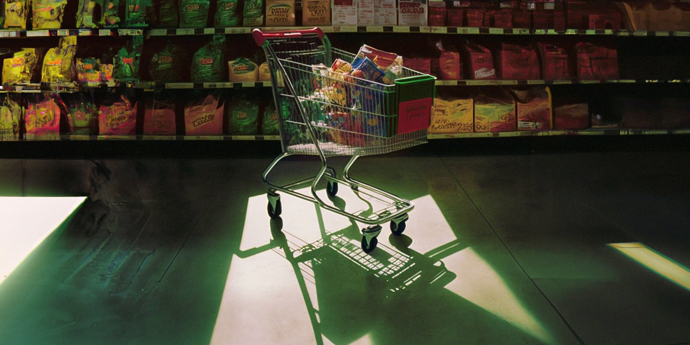
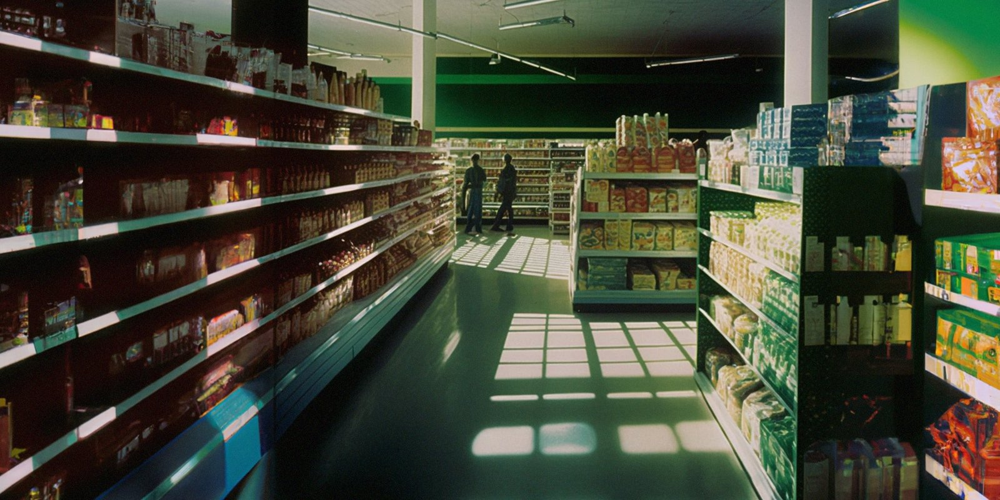
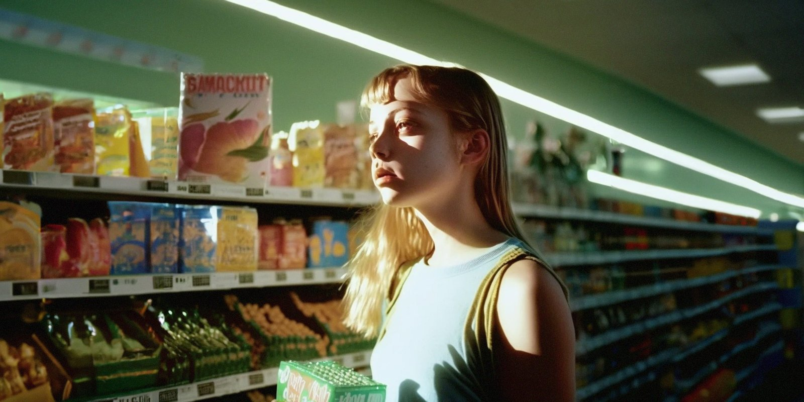

Love at First Aisle
A teenage boy stands between supermarket shelves under green fluorescent light, framed like a French coming-of-age film poster. Made in 2022 with Midjourney v4, DALL·E 2 outpainting and Photoshop grading.
| Creator | Julie W. Design @juliewdesign_ |
|---|---|
| Platform | X |
| Model | Midjourney v4 + DALL·E 2 |
| Likes | 3K |
| Posted | 2022-11-16 |
| Visual style | Cinematic realism |
| Regional vibe | European |
| Genre | Romance / youth |
| Mood | Romantic |
The creator has not published the prompt.